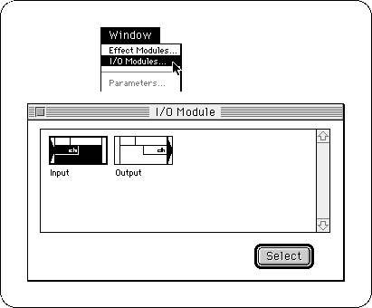
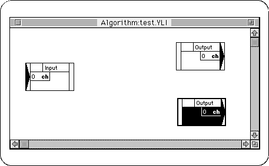
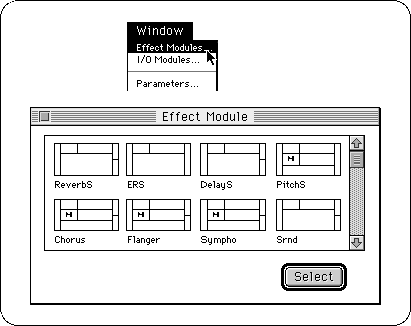
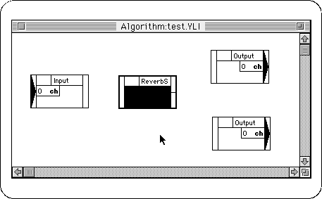
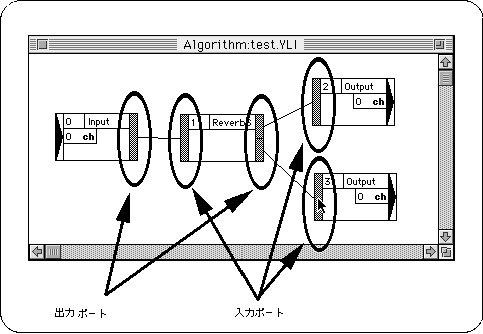
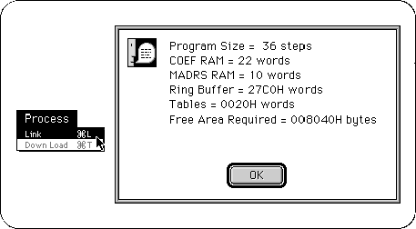
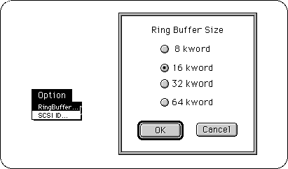
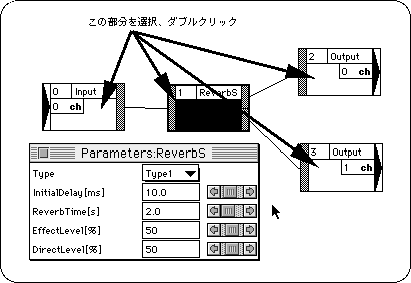
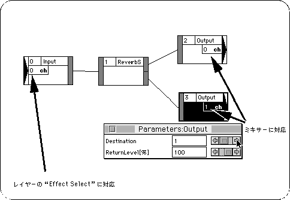
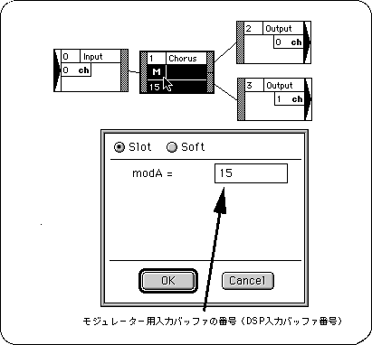

Return to previous page | Return to menu | Go to next page
In Saturn, in addition to songs played by the built-in sound source, it is possible to apply effects using the built-in DSP to sound from SE and CD. This section explains how to create a DSP program for this purpose.
However, sound will be produced even without this DSP program, so if you want to produce non-effect sound, you can skip this item.
First, start DSP Linker by double-clicking it. To create a new file, select “New” from the File menu and give it a name. The algorithm edit window will open and the file name will automatically have a “.YLI” extension.
Select “I / O Modules” from the Window menu to open the “I / O Module” window.

By double-clicking the "Input" (input to DSP) module and the "Output" (output from DSP) module in the "I / O Module" window, or by clicking and selecting with the "Select" button Import each module into the algorithm edit window. In this example, we will create a reverb, so let's import one “Input” module and two “Output” modules.
Move the imported modules to a position where they can be seen easily so that they do not overlap.

Select "Effect Modules" from the Window menu to open the "Effect Module" window.

Select the effect you want to apply, and import it into the algorithm edit window in the same way as for the input / output module.

In order to determine the flow of sound data between modules, work is done to connect each module. Clicking on the output port of a module and then clicking on the input port of the next module will connect each module with a line.

In this way, sound data flows from the input module through the effect module (s) to the output module.
After connecting the modules, the created effect algorithm is linked by selecting “Link” from the Process menu. If the link is successful, the “Link Result Information” dialog will be displayed. This dialog displays information about the usage status of DSP-related hardware resources.

The value indicated by “Free Area Required” in this “Link Result Information” dialog is the size of DSP work RAM secured in the map.
When setting DSP work RAM in the sound simulator, the top address is divided in units of 2000h. Even if you try to set a smaller address, it will be automatically shifted backward to a good address.
Processing when the “Ring buffer too small” message occurs
If you try to link, the message “Ring buffer too small” appears and you may not be able to link. In this case, select “Ring Buffer” from the Option menu to increase the ring buffer size. (The larger the ring buffer, the larger the DSP work RAM size that must be reserved in the map.)

Once linked, select “Download” from the Process menu. The created effect algorithm is downloaded to the target (development board), and the DSP can operate.
Double-click the margin of each module in the algorithm edit window (the part where no characters are displayed) or select it and select “Parameters” from the Window menu to open the parameter edit window. The

By changing the value in this parameter edit window, you can change the detailed parameters of the effect. This can be done in real time while actually playing a song or SE. However, please note that if you use the slider frequently during sequence playback, SCSI problems will easily occur.
Two effects are provided for effects that give a stereo effect like reverb. And by assigning different exits, each can be shaken to the left and right to create a stereo effect.
The output module “ch” corresponds to the channel in the mixer window of the tone editor.
The input channel “ch” corresponds to the “Effect Select” of each layer of the tone editor.

At this stage, the created effect algorithm exists only in the target memory, not as a file. If you want to save the effect algorithm after it has been completed or even while you are working, select “Save” from the File menu.
When you save, you will have four files with the extensions “.YLI”, “.EXL”, “.LRI”, and “.EXB”.
If you want to reopen a previously saved file, open the file with the extension “.YLI”.
Files that are actually incorporated into the map or passed to the main programmer are files with the extension “.EXB”.
Modulation effects such as chorus and autopan cannot be linked without specifying the modulator input buffer number (DSP input buffer number).
Click “M” to open the input buffer settings dialog for the modulator.

Be sure to select the “Slot” side for the “Slot” and “Soft” buttons.
Incorporate modulation voices such as “VoiceForAutoPan” and “VoiceForModulations” in the DSP tool folder into your tone bank.
Set the same DSP input buffer number (Effect Select) for these Voices as the modulator input buffer number. (These 15 voices are initially selected.)
When using these effects, the modulation voice must be in a sounding state. In the sequence data, put the data that makes this voice sound (the Direct Level is 0, so this voice doesn't sound as a sound).
Adjust the modulation speed with the pitch of this Voice.